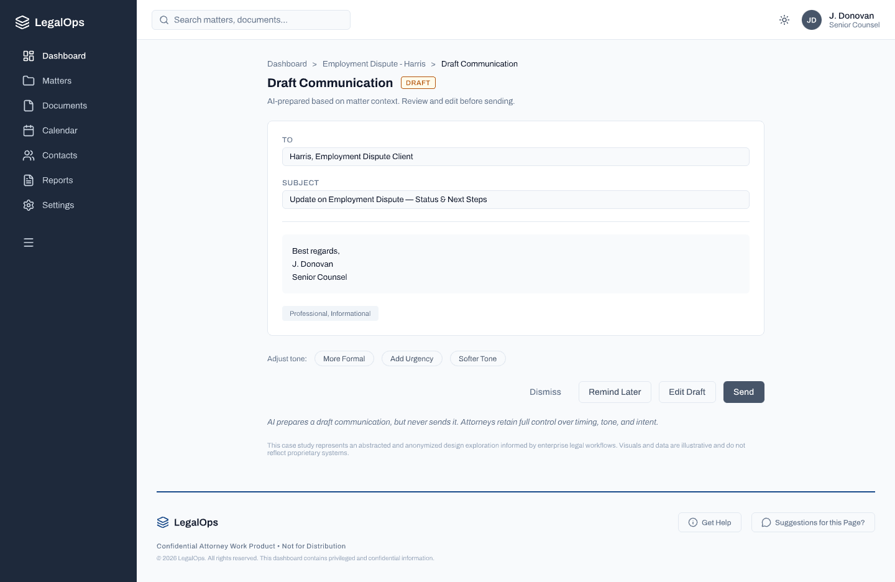
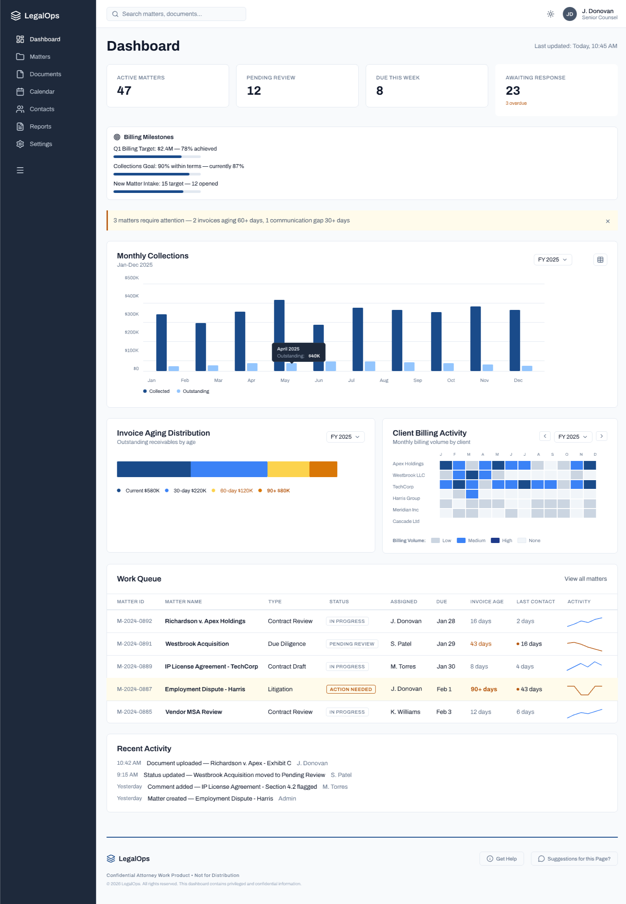
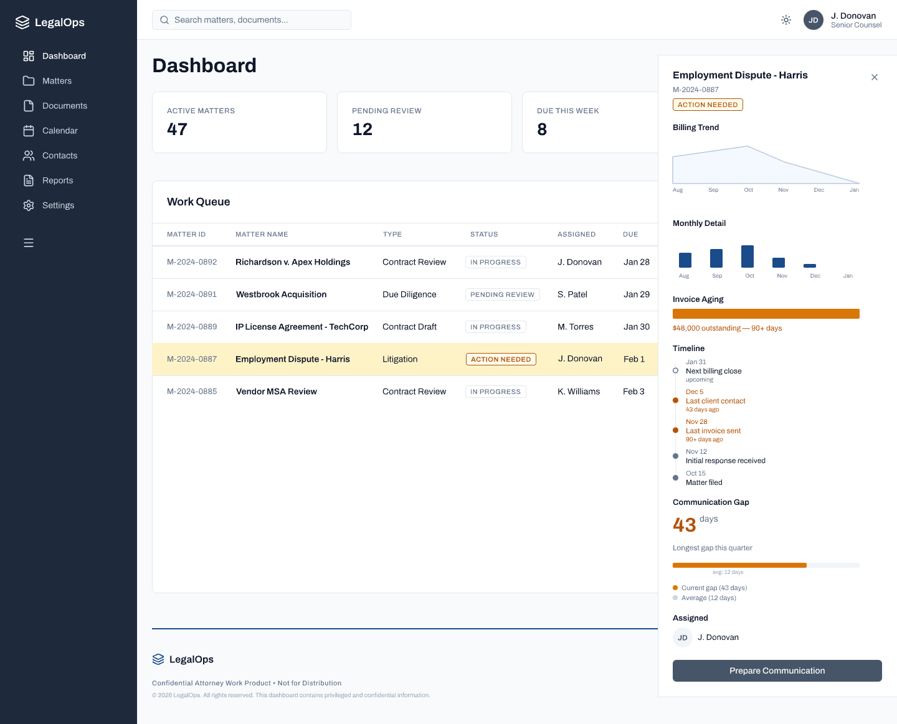
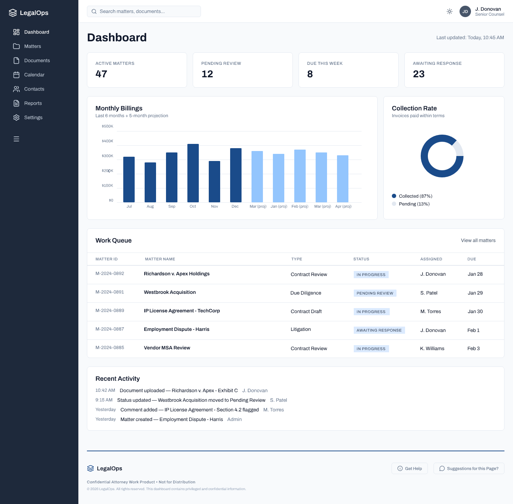

Step 01 of 04 · Calm Default State
Dashboard — No Threshold Crossed

Calm by default. The dashboard surfaces the work queue and billing metrics without urgency signals. Attorneys can orient to their caseload without the system demanding attention. No alerts until threshold is crossed.
Continuous monitoring, silent aggregation. Signals from email threads, billing records, documents, and matter status are being watched — but the interface stays quiet. The AI earns the right to interrupt.
Step 02 of 04 · Signal Detected
3 Signals Converge — Alert Surfaced

Threshold-based intervention. The AI surfaces the alert only when signals converge — not on every data point. The banner reads as informational, not alarming. The attorney decides what to do next.
Calm-by-default hierarchy preserved. The alert sits above the work queue without displacing it. Urgency is legible without being coercive — the attorney's mental model of their caseload isn't disrupted.
No automatic action. The system flagged 3 matters. It did not escalate them, reassign them, or send any communication. It surfaced context for the attorney to act on.
Step 03 of 04 · Matter Detail
Employment Dispute - Harris — Signals Reviewed

Compressed context in one view. The panel surfaces billing trend, invoice aging (90+ days, $48K outstanding), communication gap (43 days vs. 12-day average), and a full matter timeline — information that previously required cross-referencing four systems.
"Prepare Communication" — not "Send." The primary CTA initiates AI draft preparation, not delivery. The word choice is deliberate — it signals that a human step remains between this moment and any client-facing action.
Progressive disclosure. The detail panel opens alongside the work queue — the attorney never loses their place in the dashboard. Context surfaces without navigation away from the primary workflow.
Step 04 of 04 · Draft Surfaced
AI-Prepared Communication — Attorney Decides

Four equal paths. Dismiss · Remind Later · Edit Draft · Send. No path is visually privileged over another. The attorney is not nudged toward sending — they are presented with options and retain full authority over timing, tone, and intent.
Tone controls without autonomy. "More Formal / Add Urgency / Softer Tone" let the attorney adjust register — but the system cannot select tone on its own. Tone is a relational judgment that stays human-owned.
The footer says it plainly. "AI prepares a draft communication, but never sends it. Attorneys retain full control over timing, tone, and intent." This is the governance model made visible to the user — not buried in documentation.